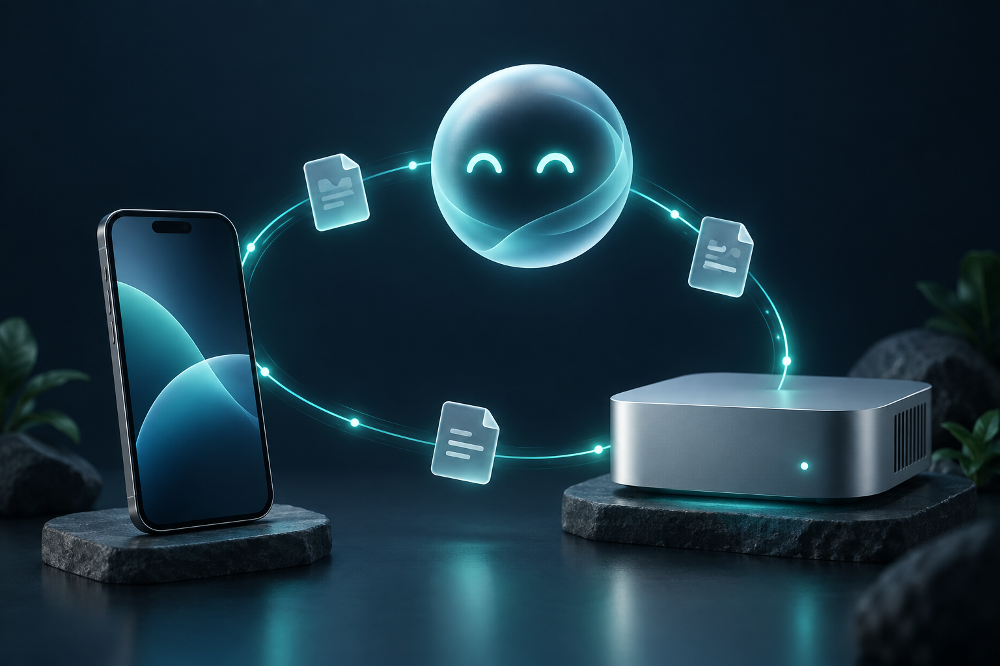

VDO.NINJA CONNECT
Your agent, one link away.
Keep a private conversation available while the desktop window is closed. Share selected files, dictate a draft, or attach a photo.
Open browser client Set up your agent

Three useful ways to connect
Turn notes into a checklist
Send a selected text file to your paired agent and ask for a checklist. Follow up in the same saved conversation.
Move a selected file
Exchange a file with your agent computer. Downloads are checked against SHA-256. No folder sharing is required.
Ask from another device
Open your private invitation on a phone or another computer. Your agent computer stays awake; its desktop app can be closed.
Watch the browser walkthrough to see selected notes become a checklist, a file download and a saved conversation reconnect.
Start on your computer
npm ci --ignore-scripts npm run background -- start npm run background -- invite
Requires Node.js 22 or newer and an authenticated Codex CLI. Open the returned web_url and click Connect to agent. Each invitation pairs one client with a separate saved conversation.
Control what reaches your agent
Choose the text and files you send. Dictation produces an editable draft. Camera access begins when you click Open camera, and only a selected photo is attached to a sent message. Recorded voice requires a transcription API key configured on the agent computer.
A hosted MCP connector can pair ChatGPT or Codex with the same background service through an OAuth consent page. It exposes messages and selected text files, not host file paths or remote shell commands. Hosted connector setup.
Understand the connection
The browser client connects over WebRTC using VDO.Ninja signaling. TURN may relay encrypted traffic. A hosted MCP connector is a participant that processes the content you send through it. Your model provider processes submitted messages and attachments. Keep your invitations private.
This is a separate Codex conversation, not an existing ChatGPT Dot thread. It supports recorded voice and selected photos rather than continuous voice or video calls.